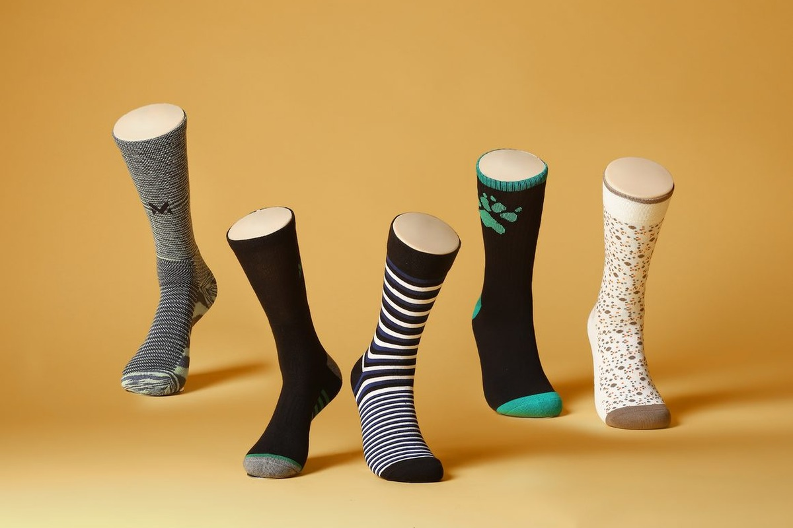
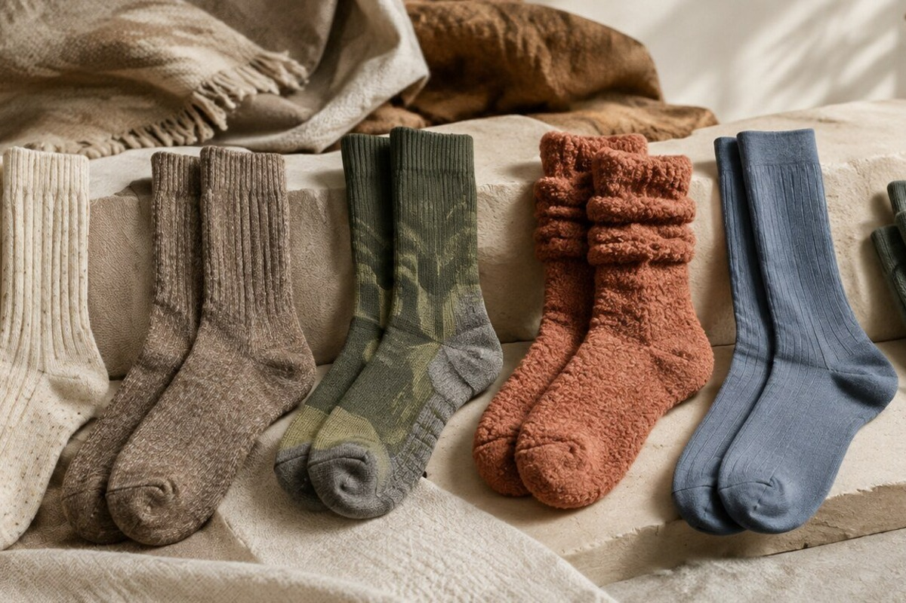
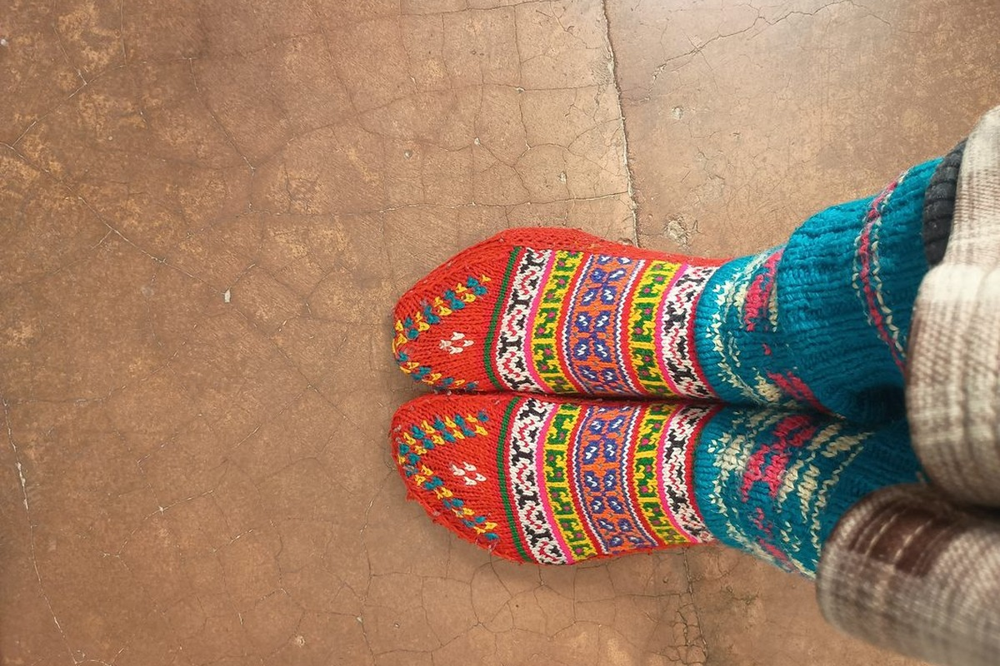
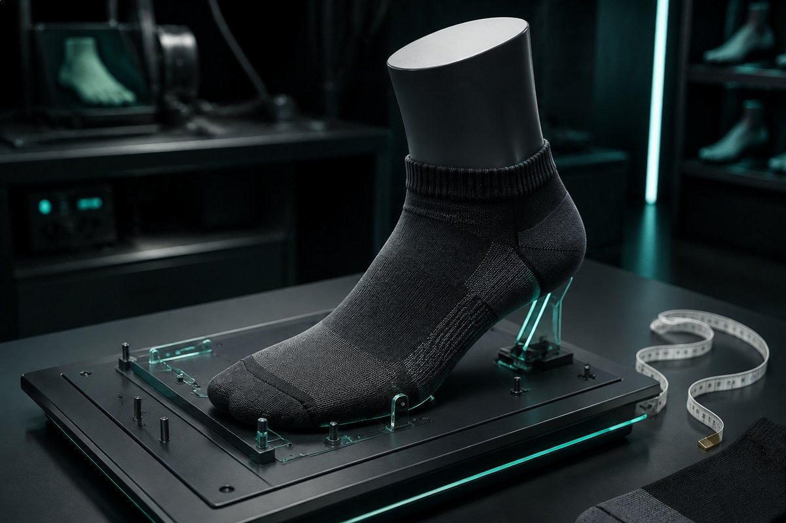

Centuries of Hosiery Craft, Forged in Modern Precision
Founded on the conviction that the most intimate garment against your skin deserves the highest standard of textile engineering, Footlet Crystal crafts luxury socks and footlets that never compromise.
The Quest for the Imperceptible Sock
For generations, sartorial enthusiasts faced an impossible dilemma when wearing loafers: endure the discomfort and sweat of going sockless, or suffer from cheap no-show socks that slide off the heel within ten paces.
Footlet Crystal was established in Boston in 2016 to engineer an uncompromising solution. We fused Italian high-gauge circular knitting machines with hand-linked toe craftsmanship and medical-grade silicone tensioning to build footlets that remain truly invisible and permanently anchored.




Microscopic Cushioning Loop Physics
Under electron microscope magnification, our micro-terry loops reveal an engineered helical spring pattern. Knitted from multi-ply combed yarns, these loops collapse gently under body weight to attenuate peak ground reaction forces, then bounce back immediately upon toe-off.
This microscopic cushioning architecture allows Footlet Crystal to provide the impact absorption of a thick athletic sock within the whisper-light silhouette of an invisible loafer liner.
The Footlet Crystal Guild Standards
Institutional commitments governing fiber provenance, machine calibration, and environmental stewardship.